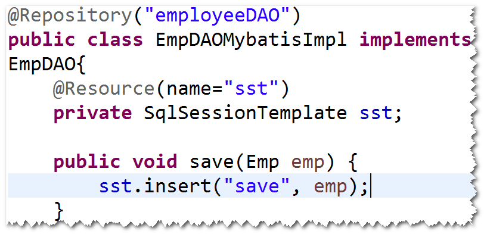

1. mapper映射器
(1)mapper映射器是什么?
符合映射文件要求的接口。
注：mybatis会依据mapper映射器，自动生成符合
其要求的对象。
(2)具体要求:
a. 方法名要与sqlId一致。
b. 参数类型要与parameterType一致。
c. 返回类型要与resultType一致。
d. 映射文件的namespace必须等于mapper映射器的
完整的名字。
(3)编程步骤
step1. 写Mapper映射器。
step2. 使用SqlSession提供的getMapper方法来获得
映射器的实现对象。
2. spring集成mybatis
(1)集成的好处：
a. 简化代码：
比如，不用关心SqlSession如何获得和关闭。
b. 可以使用依赖注入。
可以将DAO注入到目标对象，比如将AdminDAO注入
到LoginController,方便代码的维护。
(2)如何集成?
step1. 导包。
spring-webmvc(包含了spring核心包和springmvc),
mybatis,mybatis-spring(用于二者集成),
spring-jdbc, dbcp,ojdbc,junit。
step2. 添加spring配置文件。
注：不再需要mybatis的配置文件，只需要配置
SqlSessionFactoryBean就可以了。

step3. 实体类
step4. 映射文件
step5. Mapper映射器(DAO)
step6. 配置MapperScannerConfigurer。
注：这个bean会创建SqlSession对象，另外，会调用
SqlSession对象的getMapper方法，来创建符合
映射器要求的对象，最后，将这些对象(即符合映射器要求)
放到spring容器里面(即可以调用容器提供的getBean方法
来获得这些对象，当然，也可以使用依赖注入)。
 注：
注：
a. 默认的id是首字母小写之后的映射器名。
b. 可以使用@Respository对id进行命名。此时，
不需要配置组件扫描。
c.如果只扫描特定的映射器，可以设置
MapperScannerConfigurer的annotationClass
属性。
c1.开发一个注解，比如@MyRepository。
c2.将该注解添加到要扫描的映射器。
c3.配置annotationClass属性。
3. spring集成mybatis的另外一种方式(了解)。
step1. 导包。
spring-webmvc(包含了spring核心包和springmvc),
mybatis,mybatis-spring(用于二者集成),
spring-jdbc, dbcp,ojdbc,junit。
step2. 添加spring配置文件。
注：不再需要mybatis的配置文件，只需要配置
SqlSessionFactoryBean就可以了。
step3. 实体类
step4. 映射文件
step5. Mapper映射器(DAO)
step6. 配置SqlSessionTemplate。

step7. 写一个DAO实现类，将SqlSessionTemplate
注入到该类。
